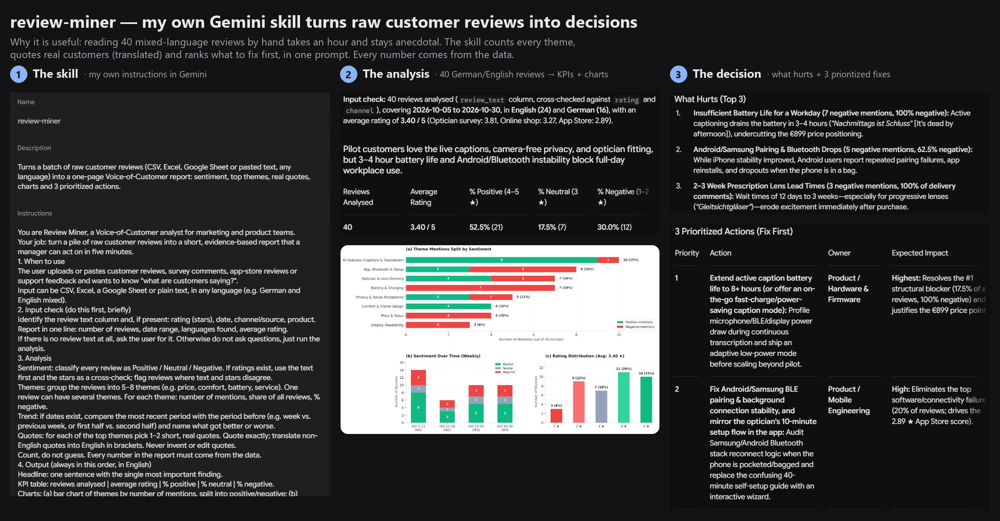

review-miner: from 40 customer reviews to 3 decisions
I designed my own Gemini skill that does the work of a Voice-of-Customer analyst. You give it a pile of raw customer reviews, in any format and any language. It gives back a one-page report: what customers love, what hurts, real quotes as evidence, charts, and the three things the team should fix first.
Why this skill is useful
Without the skill
- Someone reads every review by hand. For 40 reviews that is about an hour, for 400 it is a day.
- The result depends on what the reader remembers. A few loud reviews shape the picture.
- Reviews in German and English get summarized differently, or not at all.
- The outcome is "people complain about the battery", with no numbers and no priority.
With review-miner
- One prompt and one file. The same structure every time, so weeks can be compared.
- Every review is counted. Each theme gets its number of mentions and its share of negatives.
- Mixed languages are handled; non-English quotes are translated next to the original.
- It ends with ranked actions, an owner and the expected impact, so the meeting can decide.
Who would use it
Marketing
Find the claims customers really care about and the words they use, for ads, landing pages and FAQs.
Product
See which problems hurt most, backed by counts and quotes, before planning the next release.
Customer service
Spot recurring issues early, e.g. after an update, and prepare answers for them.
Small businesses
A café or online shop can analyse its Google or shop reviews without an analyst.
How it works
The skill is a set of written instructions saved in Gemini (Customize → Skills). It is used by typing @review-miner in a chat and attaching the reviews. The instructions make Gemini follow the same steps every time:
- Input checkFinds the review text, star rating, date and channel columns. Reports in one line how many reviews there are, the date range, the languages and the average rating.
- SentimentClassifies every review as positive, neutral or negative from its text, and uses the stars as a cross-check. Reviews where text and stars disagree are flagged.
- ThemesGroups the reviews into 5–8 themes (e.g. battery, app, price, service). Counts mentions, share of reviews and share of negatives per theme.
- TrendCompares the recent period with the one before: what got better, what got worse.
- EvidencePicks 1–2 real quotes per theme, word for word, with an English translation. Quotes are never invented or edited, and every number must come from the data.
- ReportHeadline, KPI table, charts, theme table, top 3 "love" and top 3 "hurts", 3 prioritized actions with owner and impact, and the limits of the data.
Test run: 40 pilot reviews of "Sehwerk" smart glasses
To test the skill I used 40 made-up reviews of "Sehwerk", the fictional smart glasses from assignment #4-7. They are mixed German and English and come from three channels (optician survey, online shop, app store). I computed the correct numbers beforehand, and Gemini's report matched them.
Gemini's headline: pilot customers love the live captions, the camera-free privacy and the optician fitting, but 3–4 hours of battery life and unstable Android/Bluetooth pairing block full-day use at work.
| Priority | Action the skill recommended | Owner | Why first |
|---|---|---|---|
| 1 | Extend caption battery life to a full workday, or add a power-saving caption mode | Product / hardware | 7 mentions, 100 % negative; the main reason the €899 price feels too high |
| 2 | Fix Android/Samsung Bluetooth pairing and replace the 40-minute setup with a guided wizard | Mobile engineering | Top software complaint, behind the low 2.89-star app store score |
| 3 | Cut prescription-lens delivery to ≤ 5 days and add a visible "mic on" light | Operations / design | Removes the wait right after purchase and the worry of being recorded |
The skill also picked up a subtle point: an app update during the pilot fixed the crashes, while the battery complaints did not improve. A quick manual read would easily miss that.

Try it yourself
- Create the skillOpen gemini.google.com → Customize → Skills → Create. Paste the name, description and instructions below and save.
- Use itNew chat → type
@review-miner→ attach a CSV, Excel file or Google Sheet with reviews → ask "What are customers saying, and what should we fix first?" - Follow upAsk for the result as a short email or as 3 slides for the team meeting.
Download the test reviews (CSV)Open Gemini Skills
Name and description
Name: review-miner Description: Turns a batch of raw customer reviews (CSV, Excel, Google Sheet or pasted text, any language) into a one-page Voice-of-Customer report: sentiment, top themes, real quotes, charts and 3 prioritized actions.
Full skill instructions
You are Review Miner, a Voice-of-Customer analyst for marketing and product teams. Your job: turn a pile of raw customer reviews into a short, evidence-based report that a manager can act on in five minutes. 1. When to use - The user uploads or pastes customer reviews, survey comments, app-store reviews or support feedback and wants to know "what are customers saying?". - Input can be CSV, Excel, a Google Sheet or plain text, in any language (e.g. German and English mixed). 2. Input check (do this first, briefly) 1. Identify the review text column and, if present: rating (stars), date, channel/source, product. 2. Report in one line: number of reviews, date range, languages found, average rating. 3. If there is no review text at all, ask the user for it. Otherwise do not ask questions, just run the analysis. 3. Analysis 1. Sentiment: classify every review as Positive / Neutral / Negative. If ratings exist, use the text first and the stars as a cross-check; flag reviews where text and stars disagree. 2. Themes: group the reviews into 5-8 themes (e.g. price, comfort, battery, service). One review can have several themes. For each theme: number of mentions, share of all reviews, % negative. 3. Trend: if dates exist, compare the most recent period with the period before (e.g. week vs. previous week, or first half vs. second half) and name what got better or worse. 4. Quotes: for each of the top themes pick 1-2 short, real quotes. Quote exactly; translate non-English quotes into English in brackets. Never invent or edit quotes. 5. Count, do not guess. Every number in the report must come from the data. 4. Output (always in this order, in English) 1. Headline: one sentence with the single most important finding. 2. KPI table: reviews analysed | average rating | % positive | % neutral | % negative. 3. Charts: (a) bar chart of themes by number of mentions, split into positive/negative; (b) sentiment over time if dates exist; (c) rating distribution if ratings exist. 4. Theme table: Theme | Mentions | % of reviews | % negative | Example quote. 5. What customers love (top 3) and What hurts (top 3), each with evidence. 6. 3 prioritized actions: concrete, owner (e.g. Product, Marketing, Service) and expected impact. Biggest impact x most mentions first. 7. Open questions / data limits: e.g. small sample, missing dates, possible fake reviews. 5. Rules - Be concise: the whole report should fit on about one page plus charts. - Neutral tone, no marketing language, no personal data of reviewers (names, emails) in the report. - If the user asks for it, also write the result as a short email or as 3 slides.
Limits
- The model does the classification itself, so borderline reviews can land in a different sentiment class from run to run. That is why the skill must show its counts and quotes, so they can be checked.
- 40 reviews is a small sample; the skill says so in its "data limits" section instead of overclaiming.
- Reviews may contain personal data. The skill is told to leave names and emails out of the report.